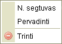
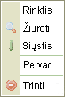

Kontekstinis meniu tai yra eilė mygtukų (vadinamų "meniu") kurie gali paleisti tam tikras užduotis ar operacijas. Galimi pasirinkimas keičiasi dinamiškai, prikalusomai nuoto, koks objektas buvo nuspaustas.
Žemiau yra meniu, kuriuos atrasite dirbant su standartine CKFinder instaliacija.
Jis atsiranda, kai segtuve paspaudžiate Segtuvų skydelyje dešiniu pelės klavišu:

Jis atsiranda, kai nuspaudžiate failą Failų skydelyje dešiniu pelės klavišu:

Jis atsiranda, kai nuspaudžiate Failų skydelyje, bet failo išorėje (fone) pelės dešiniu klavišu: